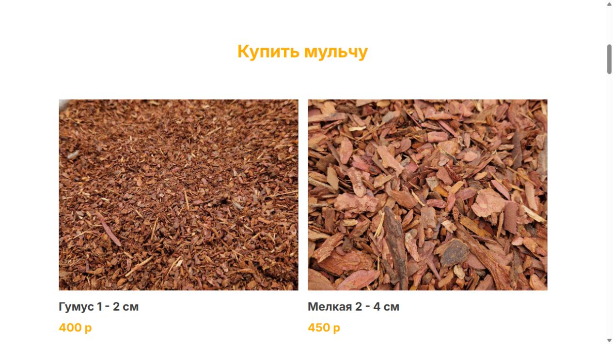
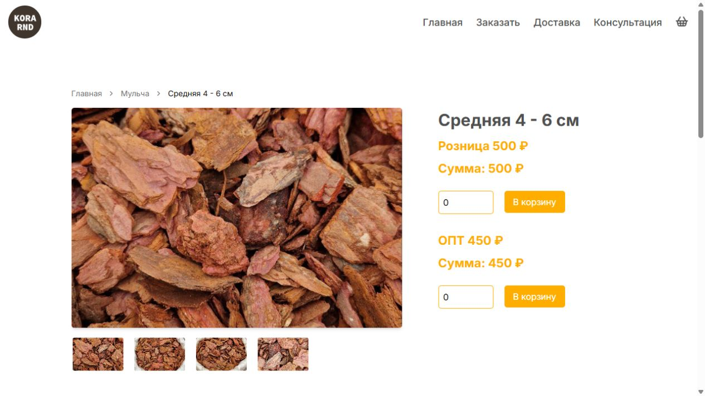

Каталог по фракциям
Карточки помогают сравнить размер, назначение и стоимость материала.
Нишевый продукт превратили в понятный выбор: от сравнения фракций до заказа и доставки.

Покупателю важно быстро понять разницу между фракциями коры, увидеть цену и выяснить условия доставки. Сайт должен работать одинаково понятно для розницы и опта.
Открыть живой сайт ↗Карточки помогают сравнить размер, назначение и стоимость материала.
Фото, розничная и оптовая цена, количество и действие покупки.
Отдельные условия для города, области и оптовых покупателей.
Применение мульчи объяснено простым языком и поддерживает SEO.
Показываем не декоративный макет, а реальные ключевые сценарии опубликованного сайта.


Варианты, фотографии и цены собраны в одном каталоге.
Меньше вопросов менеджеруКарточки и корзина формируют законченный сценарий покупки.
От интереса к действиюПроизводство, доставка и точки самовывоза объяснены заранее.
Прозрачные условия